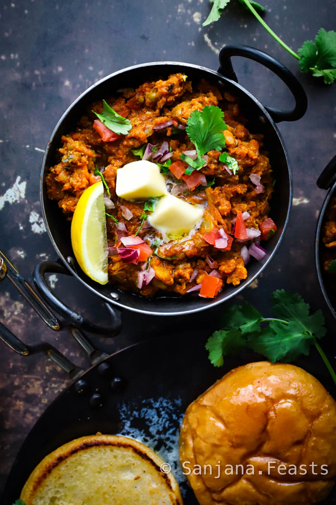
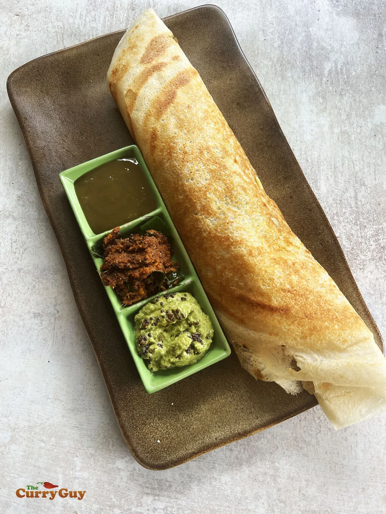
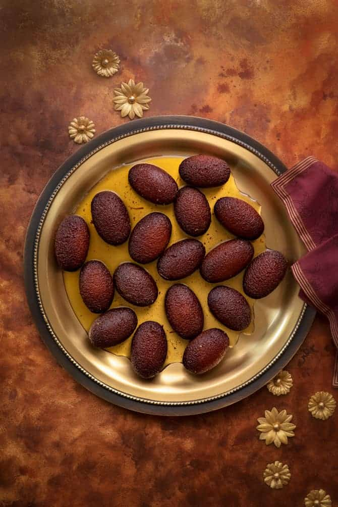

यहाँ पाव भाजी रेसिपी का सारांश है:
पाव भाजी एक प्रसिद्ध भारतीय स्ट्रीट फूड है, जो मसालेदार मैश की हुई सब्ज़ियों से बनाई जाती है
और मक्खन में तले हुए पाव (ब्रेड रोल्स) के साथ परोसी जाती है। इसे बनाने के लिए आलू, फूलगोभी,
मटर, गाजर और शिमला मिर्च जैसी सब्ज़ियों को उबालकर मैश किया जाता है। फिर मक्खन में प्याज,
अदरक-लहसुन पेस्ट, हरी मिर्च और टमाटर को भूनकर उसमें पाव भाजी मसाला, लाल मिर्च पाउडर और हल्दी
डालकर मसाले तैयार किए जाते हैं। मैश की हुई सब्ज़ियों को इसमें मिलाकर 10-15 मिनट तक धीमी आँच
पर पकाया जाता है। अंत में, पाव को मक्खन में सुनहरा और कुरकुरा होने तक तला जाता है और भाजी को
हरा धनिया, नींबू के टुकड़े और कटा प्याज डालकर गर्मागर्म परोसा जाता है।
विधि:1. सब्ज़ियाँ पकाएँ:
एक प्रेशर कुकर में आलू, फूलगोभी, मटर, गाजर, और शिमला मिर्च को थोड़ा पानी डालकर 2-3 सीटी आने
तक पकाएँ।
पकने के बाद, इन सब्ज़ियों को अच्छी तरह से मैश कर लें और अलग रख दें।
2. भाजी तैयार करें:
एक कढ़ाई में मक्खन गर्म करें। इसमें बारीक कटे हुए प्याज डालें और सुनहरा भूरा होने तक भूनें।
अब अदरक-लहसुन पेस्ट और हरी मिर्च डालकर कुछ सेकंड भूनें।
टमाटर डालें और तब तक पकाएँ जब तक टमाटर नरम न हो जाएँ और तेल छोड़ने लगे।
पाव भाजी मसाला, लाल मिर्च पाउडर, और हल्दी पाउडर डालें। अच्छे से मिलाएँ।
अब मैश की हुई सब्ज़ियाँ डालें और पानी डालकर भाजी को धीमी आँच पर 10-15 मिनट तक पकने दें। नमक
मिलाएँ।
नींबू का रस डालकर अच्छे से मिलाएँ और गैस बंद कर दें।
3. पाव तलें:
एक तवे पर मक्खन गर्म करें और पाव को हल्का सा दोनों तरफ से तल लें ताकि वे सुनहरे और कुरकुरे
हो जाएँ।
4. सर्व करें:
गरमागरम भाजी को मक्खन और कटा हरा धनिया डालकर सजाएँ।
तले हुए पाव के साथ नींबू के टुकड़े, कटा प्याज और हरे धनिये से गार्निश करके परोसें।

मसाला डोसा
विधि:1. डोसा बैटर तैयार करें:
चावल, उड़द दाल और मैसूर दाल को 4-5 घंटे भिगोएँ।
भिगोने के बाद, इन सभी सामग्रियों को मिक्सी में डालें और पानी मिलाकर एक स्मूद बैटर बना लें।
बैटर को एक बर्तन में निकालें, नमक मिलाएँ और 8-10 घंटे के लिए फर्मेंट होने के लिए रख दें।
2. आलू की भराई तैयार करें:
एक कढ़ाई में तेल गरम करें, उसमें प्याज डालें और सुनहरा होने तक भूनें।
अब हरी मिर्च और अदरक डालें और 1-2 मिनट भूनें।
मैश किए हुए आलू डालें, नमक और धनिया पत्ते मिलाएँ। अच्छी तरह से मिलाकर एक मिनट तक पकाएँ।
3. डोसा बनाना:
एक तवा गरम करें और थोड़ा तेल लगाएँ।
बैटर को तवे पर डालकर गोल आकार में फैलाएँ।
डोसे के ऊपर तेल लगाएँ और एक मिनट के लिए पकाएँ।
फिर, बीच में आलू की भराई डालें और डोसे को मोड़ें।
4. सर्व करें:
गरमागरम मसाला डोसा को नारियल चटनी और सांभर के साथ परोसें।

गुलाब जामुन
विधि:1. चाशनी तैयार करें:
एक पैन में चीनी और पानी डालें। चीनी के घुलने तक उबालें।
चाशनी को 8-10 मिनट तक पकाएँ जब तक कि यह थोड़ी गाढ़ी न हो जाए।
इलायची पाउडर और गुलाब जल मिलाएँ। चाशनी को अलग रखें।
2. गुलाब जामुन के गोले बनाएं:
खोया, मैदा और बेकिंग सोडा को मिलाएँ।
दूध डालकर नरम आटा गूंधें।
आटे को छोटे-छोटे गोल आकार में बाँट लें।
3. तलना:
घी को कढ़ाई में गरम करें और गोलों को धीमी आंच पर सुनहरा भूरा होने तक तलें।
4. गुलाब जामुन तैयार करें:
तले हुए गुलाब जामुन को चाशनी में डालें और 2 घंटे तक भीगने दें।
5. सर्व करें:
गर्मागर्म गुलाब जामुन का आनंद लें।

काजू कतली
विधि:1. काजू पाउडर तैयार करें:
काजू को मिक्सर में डालकर बारीक पाउडर बना लें। ध्यान रहे कि काजू ज़्यादा पिसकर तेल न छोड़ें।
2. चाशनी बनाएं:
एक पैन में चीनी और पानी डालें। इसे उबालें और तब तक पकाएँ जब तक कि एक तार की चाशनी न बन जाए।
3. काजू मिश्रण तैयार करें:
चाशनी में काजू पाउडर डालें और धीमी आंच पर लगातार चलाते रहें।
मिश्रण को तब तक पकाएँ जब तक वह गाढ़ा हो जाए और पैन छोड़ने लगे।
इसमें इलायची पाउडर डालें और अच्छी तरह मिलाएँ।
4. काजू कतली को आकार दें:
मिश्रण को घी से ग्रीस की हुई प्लेट में निकालें।
थोड़ा ठंडा होने पर इसे बेलन से बेलकर पतला कर लें।
चांदी का वर्क लगाएँ (वैकल्पिक)।
चाकू से अपने पसंदीदा आकार (आमतौर पर डायमंड) में काटें।